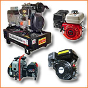
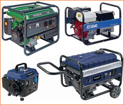
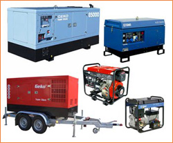
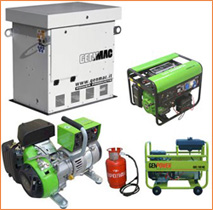

Краткий обзор типов электрогенераторов
ТИПЫ ЭЛЕКТРОГЕНЕРАТОРОВ (бензо-, дизель и газовые)
Posted By admin On Июль 20, 2011 @ 6:40 пп In Электрика | No Comments

Сердцем миниэлектростанции любой модели и производителя является двигатель внутреннего сгорания, который определяет такие параметры установки, как мощность, габариты, уровень шума, время непрерывной работы и т.д. По виду используемого двигателем классического электрогенератора топлива их принято разделять на три типа: бензиновые, дизельные и газовые. Все три типа миниэлектростанций имеют в своих модельных рядах портативные и стационарные агрегаты различной мощности.
БЕНЗОГЕНЕРАТОРЫ

Бензогенераторы используют в качестве топлива бензин А-92 (95). Агрегаты подобного типа прочно заняли нишу источников резервного питания на период работы, не превышающий 7 – 8 часов, в диапазоне мощностей до 12 – 15 кВА. Для обеспечения работы бензогенератора используются двух или четырехтактные двигатели.Двухтактные двигатели используются в установках мощностью до 0,8 кВА. Расположение клапанов в таких двигателях может быть как боковым, так и верхним, в последнем случае достигается увеличение производительности примерно на 30%. Другой особенностью работы одноцилиндровых двухтактных двигателей является смешивание в определенной пропорции бензина со специально предназначенным маслом. Блок цилиндра может изготавливаться из алюминия, что обеспечивает невысокую стоимость электрогенератора, но их наработка на отказ не превышает 500 часов. Устанавливаются подобные блоки на предназначенные для непродолжительной работы бытовые агрегаты. Блок с чугунной гильзой цилиндров имеет моторесурс порядка 1500 часов.
На установках мощностью 1,0 – 15 кВА применяются одно или двух цилиндровые верхнеклапанные четырехтактные двигатели. По сравнению с двухтактными при прочих равных параметрах они отличаются меньшим шумом, большим моторесурсом и более равномерным ходом. Одноцилиндровые четырехтактные бензиновые моторы являются самыми надежными в своем классе и имеют наработку на отказ 2500 – 4000 часов. На бензиновых миниэлектростанциях мощностью 9 – 15 кВА как правило устанавливают V-образные двухцилиндровые четырехтактные двигатели, которые при непрерывной работе до 8 часов ежедневно имеют наработку на отказ до 5000 моточасов. Бензиновые двигатели являются высокооборотными – частота вращения 3000 об/мин соответствует 50 об/сук и обеспечивает переменный ток частотой 50 Гц. С этими двигателями используются синхронные или асинхронные двухполюсные альтернаторы.
Преимущества бензогенераторов:
- гарантированный запуск при температуре окружающей среды до – 150С;
- относительно низкий уровень шума: 55 – 72 дБ;
- компактность и простота обслуживания;
- стоимость агрегата ниже, по сравнению с дизельными или газовыми аналогами.
Недостатки:
- высокая, по сравнению с другими типами электрогенераторов, стоимость бензина обуславливает высокую стоимость вырабатываемой электроэнергии;
- бензин обладает меньшим относительно дизтоплива и сжиженного газа сроком хранения и требует при этом соблюдения специальных условий.
Мировыми лидерами в производстве бензиновых двигателей для электростанций являются компании: Briggs&Stratton (США), Honda (Япония), Kubota (Япония), Mitsubishi (Япония), Robin (Япония), Suzuki (Япония), Yamaha (Япония), Lombardini (Италия), Tecumseh (Италия).
ДИЗЕЛЬГЕНЕРАТОР

Дизельгенераторы используют для работы дизельное топливо. Область их применения – источники резервного питания на период работы более 7-10 часов или источники основного электроснабжения при потребляемой мощности 12 – 3000 кВА. Маломощные дизельные электростанции имеют воздушное охлаждение и комплектуются высокооборотным двигателем (3000 об/мин) с низким моторесурсом – 500 часов.По сравнению с бензиновыми аналогами подобные агрегаты потребляют больше топлива, имеют более высокий уровень шума и существенно тяжелее, поскольку для сжигания дизтоплива необходимо обеспечивать высокое давление в камере сгорания, что делает блок цилиндра более массивным. Поскольку дизельное топливо нелетучее и в дизельных двигателях не используется система зажигания, вероятность их возгорания намного меньше, чем у бензиновых, поэтому дизельные генераторы используют при ликвидации аварий, требующих соблюдения особых мер безопасности или для электроснабжения стройплощадок.
Предназначенные для длительной непрерывной работы мощные дизельные миниэлектростанции снабжаются низкооборотными двигателями – 1500 об/мин или 750 об/мин, что позволяет использовать, соответственно, четырех или восьмиполюсные альтернаторы. Такие установки снабжаются системой жидкостного охлаждения, имеют оптимальный расход топлива и большой моторесурс: 15000 – 40000 часов наработки на отказ (1 год = 365х24 = 8760 часов).
При эксплуатации дизельного генератора следует иметь в виду, что он не «любит» работать на холостых оборотах и малых частичных нагрузках, поэтому для снижения вредных последствий для его «здоровья» следует на каждые 100 часов обеспечивать 2 часа работы под 100 % нагрузкой. Другой важной особенностью эксплуатации дизельных миниэлектростанций является изменение физических свойств топлива при понижении его температуры, что обусловлено это присутствием в дизельном топливе высокомолекулярных углеводов (парафинов). При охлаждении вязкость топлива возрастает вплоть до кристаллизации парафинов. Летние сорта дизтоплива становятся вязкими уже при температуре + 30С, что следует учитывать в периоды резкой смены погоды.
Преимущества дизельгенераторов:
- большой моторесурс и высокая надежность;
- низкая стоимость вырабатываемой электроэнергии;
- быстрая окупаемость при более высокой, чем бензиновые аналоги, стоимости;
- более низкие требования к безопасности при хранении топлива, по сравнению с газом и бензином.
Недостатки:
- гарантированный запуск при температуре окружающей среды только до – 50С;
- высокий уровень шума: 80 – 110 дБ (железнодорожный состав – 90 дБ, сирена – 100 дБ, старт реактивного самолета – 120дБ);
- при установке вне отапливаемого помещения зимой необходим подогрев топлива и охлаждающей жидкости;
- более требовательны к культуре эксплуатации.
Мировыми лидерами в производстве дизельных двигателей для электростанций являются компании: Honda (Япония), Kubota (Япония), Robin (Япония), Yamaha (Япония), Yanmar (Япония), Lombardini (Италия), Acme (Италия), Iveco (Италия), Hatz (Германия), Perkins (Великобритания), Scania (Швеция).
ГАЗОГЕНЕРАТОР

Газовые генераторы могут использовать для работы газ различного происхождения: природный, попутный нефтяной, сжиженный, биогаз, шахтный, генераторный газ и т.д. На нашем рынке представлены газовые портативные генераторы или стационарные миниэлектростанции, которые работают на сжиженной пропанобутановой смеси - LPG (Liquefied Petroleum Gas) или на природном газе, который называю также «магистральным» или «сетевым» - NG (Natural Gas). Применяются установки этого типа в качестве источников резервного питания на период работы 5 – 10 часов или основного электроснабжения.Газовые генераторы мощностью до 6 кВА снабжаются высокооборотным (3000 об/мин) газопоршневым четырехтактным двигателем внутреннего сгорания с воздушным охлаждением, что ограничивает время его непрерывной работы. Если для работы подобного агрегата используется поставляемая в бытовых газовых баллонах пропанобутановая смесь, особой экономии в производстве электроэнергии по сравнению с бензогенератором не будет, несмотря на более низкую цену топлива. При подключении к газопроводу стоимость 1 кВт/час будет меньше в 2 раза, чем у дизельгенератора, и почти в 3 раза, чем у бензогенератора при прочих равных характеристиках.
Производятся модели, которые работают на обоих типах газового топлива, переход между которыми осуществляется установкой переключателя в соответствующее положение LPG или NG. Но здесь есть один подводный камень. Двигатели для газовых генераторов с воздушным охлаждением являются вариантом бензинового (реже дизельного) мотора, у которого модифицирована система впрыска и карбюрации топлива (в этом можно убедиться по указанной в технических характеристиках модели двигателя). Средний моторесурс бензиновых аналогов составляет 1500 – 2000 часов, и очень сомнительно, что использование газового топлива увеличит его до рекламируемых 4000 – 5000 часов, поэтому экономия на затратах за период эксплуатации будет несущественной.
Мощные (до 3000 кВА) газовые миниэлектростанции ведущих производителей предназначенные для длительной непрерывной работы и снабжаются специально разработанными низкооборотными (1500 об/мин) газопоршневыми двигателями (четырехтактные рядные до 8 цилиндров, V-образные – до 16 цилиндров) с жидкостным охлаждением или газотурбинными установками. Моторесурс подобных агрегатов может достигать 60000 часов наработки на отказ.
При работе газопоршневой установки кроме электроэнергии вырабатывается значительное количество тепловой энергии (процесс когенерации), которую можно использовать для обогрева помещений или горячего водоснабжения, что превращает такую установку в мини-ТЭС. Установки, в которых для нужд потребителей используются оба вида выделяемой полезной энергии, называются когенерационными. Системы синхронизации параллельной работы нескольких газопоршневых миниэлектростанций позволяют создавать когенерационные установки общей мощностью в 10 МВт, что может быть использовано для жизнеобеспечения небольшого поселка.
Преимущества газогенераторов:
- высокая надежность и стабильность работы;
- относительно низкий уровень шума (до 75 дБ);
- более высокая экологичность выхлопа (выбросы содержат меньшее количество сажи и высокомолекулярных токсичных соединений);
- возможность использования в качестве когенерационной установки;
- при определенных условиях эксплуатации низкая стоимость вырабатываемой электроэнергии.
Недостатки:
- газ более взрывоопасное топливо, чем бензин и дизтопливо, и требует особых условий хранения и транспортировки;
- подключение к магистральному газоснабжению требует составления проектной документации и получения специального разрешения, что по стоимости может превышать цену самой установки.
- помещение, в котором располагается газовая миниэлектростанция, должно быть обязательно оборудовано принудительной проточно-вытяжной вентиляцией и датчиком утечки газа;
- при температуре окружающей среды ниже нуля баллон с сжиженным газом необходимо размещать в отапливаемом помещении.
Мировыми лидерами в производстве двигателей для газовых электростанций являются компании:, Yanmar (Япония), General Motors (США), Kohler (США), Generac (США), Cummins (США), MDE (Германия), FG Wilson (Великобритания), Jenbacher AG (Австрия).
Article printed from УЮТНЫЙ ДОМ, КОМФОРТНЫЙ БЫТ: http://komfortnyj-dom.info
URL to article: http://komfortnyj-dom.info/types-of-electricity-gasoline-diesel-and-gas.html
Click here to print.
Copyright © 2018 УЮТНЫЙ ДОМ, КОМФОРТНЫЙ БЫТ. All rights reserved.